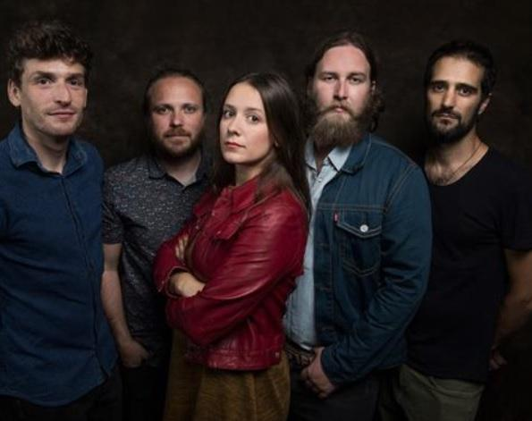
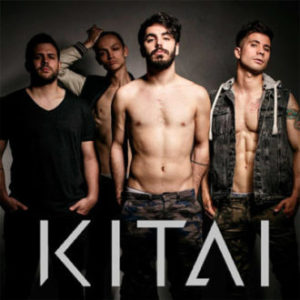

Morgan
Acaban de llenar el Teatro Circo Price dos noches, tocando ante un total de 3.600 fans que agotaron las entradas en un abrir y cerrar de ojos. Su soul rock llegado como de otra época es una de las más gratas sorpresas de la temporada y todo parece indicar que su tirón popular va a seguir creciendo durante 2019. Su calidad y su elegancia les avala en sus dos discos –North (2016) y Air (2018)- y ganan adeptos concierto tras concierto gracias a unas interpretaciones sobresalientes y al carisma escénico de una vocalista incomparable, Carolina ‘Nina’ de Juan.
Kitai
El joven cuarteto madrileño, siempre tramando y perpetrando planes originales para expandir su música, estuvo 24 horas tocando sin descanso en noviembre en la Sala El Sol de Madrid para batir un Record Guinness -y acabaron tan sobrados que incluso hicieron un bis-. El próximo viernes 8 de marzo cierran la gira de presentación de su segundo álbum, Pirómanos (2017), dando el salto a La Riviera madrileña, que vivirá una noche grande repleta de rock alternativo con poso noventero.